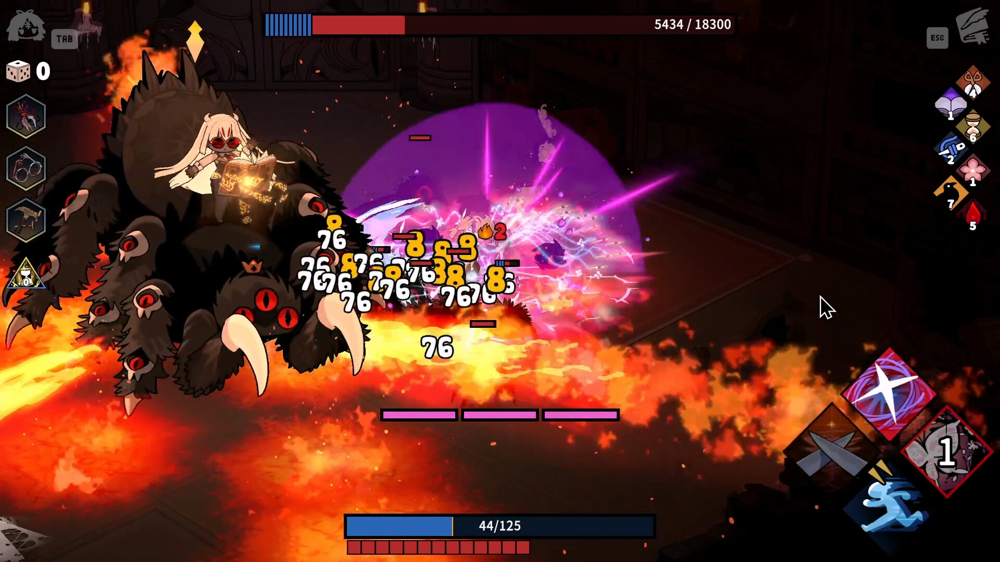
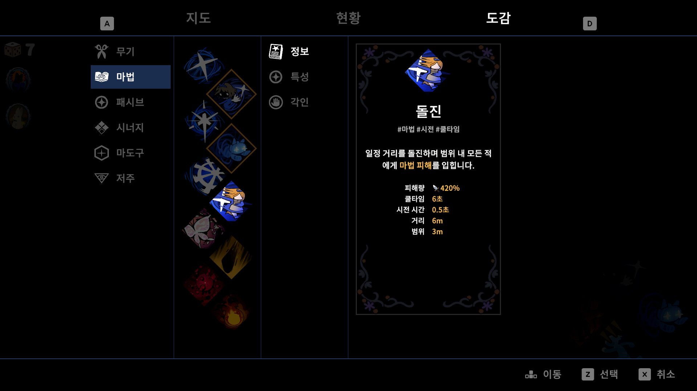
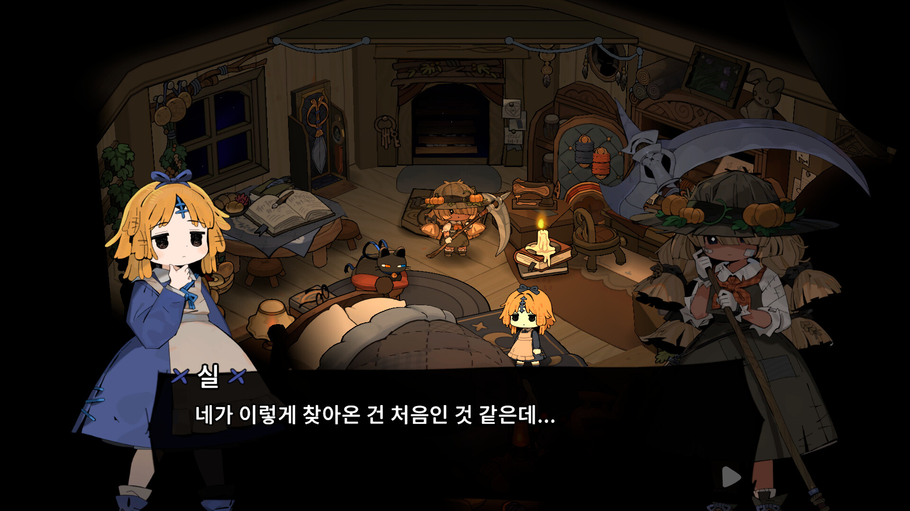
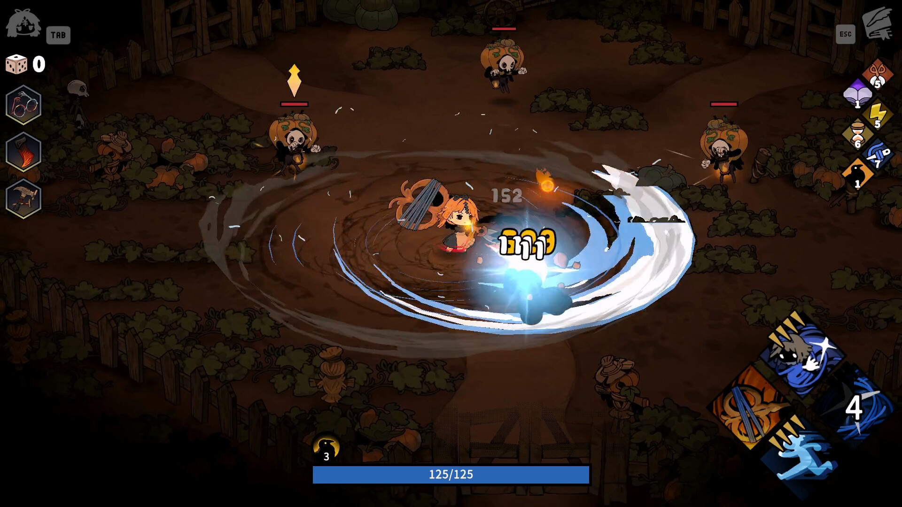

마녀의정원 정식출시일 D-1 팀타파스 로그라이크 정식판 달라지는점 정리
마녀의 정원이 내일, 2026년 8월 28일에 정식 출시를 앞두고 있습니다. 스팀 상점 페이지의 '앞서 해보기 종료' 안내에 8월 28일이 그대로 못 박혀 있고, 인벤 보도에서도 같은 날짜를 정식 출시일로 확인해줬는데요. 오늘이 바로 그 하루 전, D-1인 셈이죠. 그동안 '앞서 해보기'로 서비스돼 온 게임이라 아직 안 접해보신 분들도 많을 텐데, 정식판에서 뭐가 새로 생기고 뭐가 달라지는지 공식 정보 기준으로 미리 정리해볼게요.
스팀 상점에 걸려 있는 '마녀의 정원' 대표 이미지예요.
이미지: 마녀의 정원 스팀 상점 · 네이버 본문엔 받아서 재업로드 권장
마녀의 정원, 어떤 게임인가요?
마녀의 정원은 '팀 타파스'가 단독으로 개발하고 서비스하는 로그라이크 액션 게임입니다. 스팀 장르 태그에는 액션·인디·RPG·앞서 해보기가 함께 걸려 있고요, 앞서 해보기 기간 동안 챕터 1부터 5까지 메인 스토리 전체가 이미 제공돼 왔습니다.
스킬과 무기, 젬 같은 조합 요소를 골라 담아 던전을 도는 구조라 로그라이크 특유의 '판마다 달라지는 조합' 재미가 핵심이에요. 개발과 배급을 전부 팀 타파스 한 곳이 맡고 있다는 점도 짚어둘게요 — 다른 대형 퍼블리셔가 낀 게 아니라, 개발사가 직접 서비스하는 인디 게임입니다.

스킬·무기·젬 조합으로 몰아치는 전투 장면이에요. 판마다 조합이 달라지는 로그라이크 특유의 손맛이 여기서 나온다고 하네요.
이미지: 마녀의 정원 스팀 상점 · 네이버 본문엔 받아서 재업로드 권장
앞서 해보기는 언제 끝나고, 정식 출시는 언제인가요?
앞서 해보기는 2026년 8월 28일에 끝나고, 같은 날 정식 출시로 넘어갑니다. 스팀 상점 페이지에 '앞서 해보기 종료: 2026년 8월 28일'이라고 명시돼 있고, 인벤에서도 8월 28일 정식 출시로 못 박아 보도했더라고요.
오늘(8월 27일) 기준으로는 정확히 하루 남은 셈이라, 지금 미리 뭐가 바뀌는지 알아두면 출시 당일 헷갈릴 일이 줄어들 거예요.
정식판에서 새로 추가되는 건 뭔가요?
정식 출시와 함께 스토리 결말, 조작 방식, 전투 시스템까지 한꺼번에 달라진다고 하는데요, 아래 항목들은 스팀 상점 페이지가 아니라 경향게임스·인벤 보도를 근거로 정리한 내용이라는 점을 먼저 밝혀둘게요.
- 에필로그 2·3 추가 — 앞서 해보기에서는 볼 수 없었던 결말 파트가 정식판에서 공개됩니다.
- 키보드·마우스 조작 정식 지원 — 그동안 패드 위주였다면, 이제 키보드·마우스로도 기본 지원됩니다.
- '시너지' 시스템 개편 — 기존 시너지 시스템은 사라지고, 그 자리를 스킬·무기·각인·마도구 각각의 고유 메커니즘이 대신하는 쪽으로 손이 갔다고 해요.
- 출시 전인 8월 중순에는 전투 시스템 베타테스트도 한 차례 검토됐다고 합니다.
전투 흐름 자체가 꽤 바뀔 수 있는 변경이라, 앞서 해보기 때 잠깐 봤던 기억만 믿고 정식판에 들어가면 살짝 낯설 수도 있겠어요.

마법과 각인을 살펴보는 도감 화면이에요. 시너지 시스템이 빠진 자리를 스킬·무기·각인·마도구 조합이 대신한다는 게 이 화면에서 드러나 보여요.
이미지: 마녀의 정원 스팀 상점 · 네이버 본문엔 받아서 재업로드 권장

스토리 파트의 한 장면이에요. 정식판에서는 여기서 더 나아가 에필로그까지 이어진다고 하네요.
이미지: 마녀의 정원 스팀 상점 · 네이버 본문엔 받아서 재업로드 권장
한국어랑 일본어 음성은 어떻게 지원되나요?
한국어는 인터페이스와 자막까지만 지원되고 음성은 지원되지 않으며, 일본어 음성은 정식 출시와 함께 챕터 5까지 새로 추가됩니다.
스팀 언어 지원표를 2026년 8월 27일 기준으로 확인해보면, 지금은 어떤 언어도 음성 지원 열에 체크가 안 돼 있어요. 아직 정식판 패치가 반영되기 전이라 그런 건데, 경향게임스 보도에 따르면 한국콘텐츠진흥원 게임더하기 해외 수출 지원사업을 통해 일본어 음성 더빙이 챕터 5까지 붙는다고 합니다. 한국어를 쓰는 입장에서는 자막으로 읽는 방식이 그대로 유지되고, 음성은 이번에도 지원되지 않는다고 보시면 됩니다.
| 언어 | 인터페이스 | 자막 | 음성 |
|---|---|---|---|
| 한국어 | 지원 | 지원 | 미지원 |
| 일본어 | 지원 | 지원 | 정식 출시부터 챕터5까지 지원 예정 |
(한국어·일본어의 인터페이스·자막, 그리고 현재 음성 미지원 상태는 2026년 8월 27일 스팀 언어 지원표에서 직접 확인한 내용이고, 일본어 음성이 챕터5까지 추가된다는 부분은 아직 스팀 표에는 반영되지 않은 경향게임스 보도 기준 예정 사항이에요. 정확한 반영 여부는 정식 출시 후 스팀 언어표에서 다시 확인하시는 걸 추천드려요.)
가격이랑 할인은 어떻게 되나요?
정가는 22,000원이고 지금(8월 27일) 기준 진행 중인 할인은 없으며, 이 가격은 정식 출시 후에도 그대로 유지될 예정입니다.
스팀 스토어에서 확인한 실제 판매가가 22,000원이고, 할인율은 0%로 떠 있어요. 앞서 해보기 종료 전후로 가격이 오르는 건 아닌지 스팀 상점 «개발자의 한마디» Q&A를 직접 확인해보니, "가격은 Early Access 종료 후에도 동일하게 유지될 예정입니다"라고 명시돼 있더라고요.
다만 경향게임스 보도를 보면 출시를 기념해 30% 할인이 진행될 예정이라고 하니, 이 부분은 아직 '예정'이라는 걸 분명히 해둘게요. 가격 자체가 오르는 게 아니니 서두를 이유는 딱히 없고, 오히려 출시 기념 할인이 잡혀 있는 시점을 기다리는 쪽이 유리할 수 있겠어요. 실제 할인이 언제 시작해서 언제 끝나는지는 스팀 페이지에서 직접 확인하시는 걸 추천드립니다.
내 컴퓨터에서도 돌아갈까요?
결론부터 말하면 윈도우 전용 게임이고, 사양 자체는 낮은 편이라 웬만한 PC에서는 무리 없이 돌아갑니다.
스팀에 등록된 지원 플랫폼을 확인해보면 윈도우만 지원하고 맥·리눅스는 지원하지 않는 걸로 나와 있어요. 맥이나 리눅스로 즐기실 계획이었다면 이 점은 미리 알아두시는 게 좋겠습니다.
| 항목 | 최소 사양 | 권장 사양 |
|---|---|---|
| 운영체제 | Windows 10, 11 (64비트) | Windows 10, 11 (64비트) |
| 프로세서 | Intel Core i3-4160 / AMD FX-4350 | Intel Core i5-4570 / AMD Ryzen 5 1400 |
| 메모리 | 4 GB RAM | 8 GB RAM |
| 그래픽 | GeForce GTX 650 Ti / Radeon HD 7750 (VRAM 1GB) | GeForce GTX 960 / Radeon R9 380 (VRAM 2GB) |
| 저장 공간 | 4 GB | 4 GB |
(사양표는 2026년 8월 27일 스팀 상점 기준으로 확인한 내용이에요.)
DLC 없이도 본편을 다 즐길 수 있나요?
네, DLC 없이 본편만으로도 처음부터 끝까지 완전하게 플레이할 수 있습니다.
이 게임에 연결된 DLC는 'Garden of Witches - Original Soundtrack'(8,900원) 하나뿐인데, 이름 그대로 음악 앨범이거든요. 본편 진행에 꼭 있어야 하는 요소는 아니라서, 오리지널 사운드트랙이 마음에 들었다면 그때 별도로 챙기면 되는 정도로 보시면 됩니다. 다만 OST까지 같이 챙길 생각이라면 스팀에 'Garden of Witches Soundtrack Bundle'(본편+OST 2종 묶음)이 따로 있는데, 10% 할인된 27,810원으로 담을 수 있어요. 본편 22,000원과 OST 8,900원을 따로 사면 30,900원이니까, 번들 쪽이 3,090원 더 저렴한 셈이죠(2026년 8월 27일 기준 가격).
스팀 말고 스토브에서도 할 수 있나요?
네, 스팀 외에 스마일게이트의 게임 플랫폼 '스토브(STOVE)'에서도 함께 서비스됩니다.
스토브는 스마일게이트가 운영하는 게임 유통 플랫폼이고, 마녀의 정원은 그 위에서 스팀과 나란히 유통되는 구조예요. 그러니까 스마일게이트가 이 게임을 배급하는 게 아니라, 팀 타파스가 개발·배급을 모두 맡은 게임을 스토브라는 플랫폼에도 함께 올려둔 것으로 이해하시면 됩니다. 스팀 라이브러리를 이미 쓰고 계신 분이라면 굳이 옮길 필요 없이 스팀 그대로 즐기셔도 되고요.

호박밭에서 여러 적을 한 번에 쓸어담는 장면이에요. 파밍하는 재미도 로그라이크답게 쏠쏠해 보입니다.
이미지: 마녀의 정원 스팀 상점 · 네이버 본문엔 받아서 재업로드 권장
자주 묻는 질문
Q. 마녀의 정원은 혼자서만 즐기는 게임인가요, 협동도 되나요?
스팀 카테고리에는 '싱글 플레이어'만 명시돼 있고, 별도의 협동·멀티플레이 카테고리는 없어요. 혼자서 진행하는 구조로 보시면 됩니다.
Q. 컨트롤러로 플레이해도 괜찮나요?
네, 오히려 컨트롤러 쪽이 원래 강점이었어요. 스팀 카테고리에 '컨트롤러 완벽 지원'과 '게임패드 권장'이 함께 표시돼 있고, 듀얼쇼크·듀얼센스 지원도 확인됩니다. 이번에 새로 붙는 키보드·마우스 지원은 선택지가 하나 늘어난 거지, 패드 지원이 빠지는 게 아니잖아요.
Q. 진행 상황이 클라우드에 저장되나요?
네, 스팀 클라우드 저장을 지원하는 걸로 확인돼요. PC를 바꾸거나 다시 설치해도 진행 상황을 이어갈 수 있습니다.
마녀의 정원 정리
짚어보면, 마녀의 정원은 8월 28일 정식 출시로 넘어가면서 에필로그 2·3과 키보드·마우스 지원, 시너지 시스템 개편까지 한꺼번에 달라집니다. 가격은 22,000원이고 지금은 할인이 없지만 30% 출시 할인이 예정돼 있고요, 한국어는 자막까지만·일본어는 음성 더빙까지 챙기는 정식판이 되는 거고요. 앞서 해보기 시절 잠깐 봤던 분이라면 이번 정식 출시를 계기로 다시 한 번 들여다볼 만하겠어요.
✔ 출시 앞둔 게임, 이렇게도 정리했어요
· 드래곤소드 어웨이크닝 출시 D-1 사전예약 정리
· 포켓몬 챔피언스 출시 첫인상·기초가이드 총정리
참고한 곳
· 마녀의 정원 스팀 상점 페이지
· 마녀의 정원 스토브 스토어 페이지